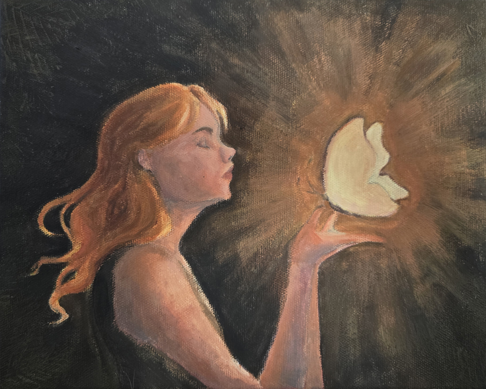
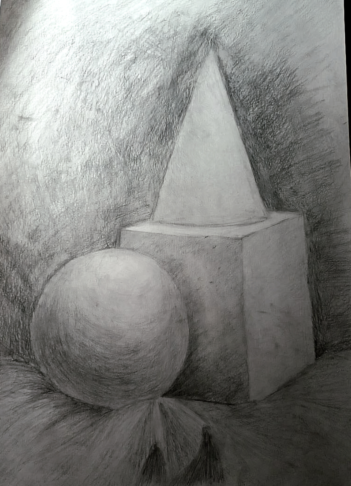
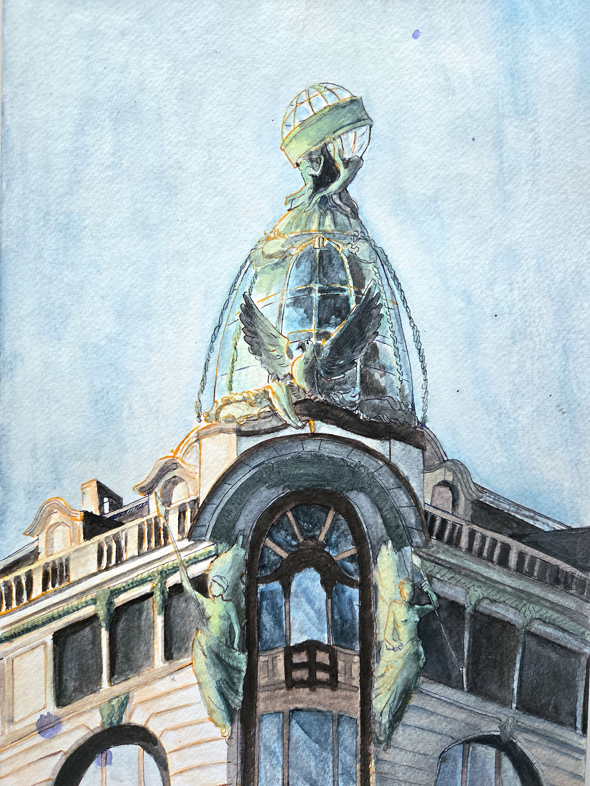
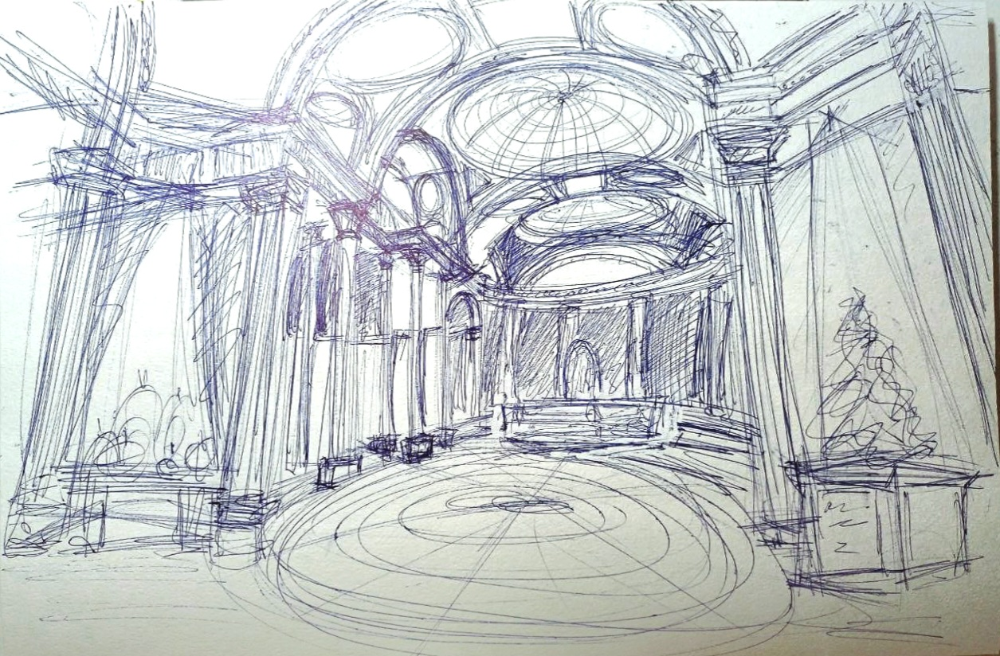
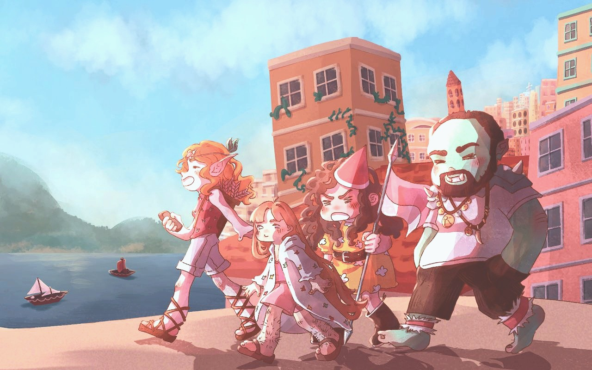
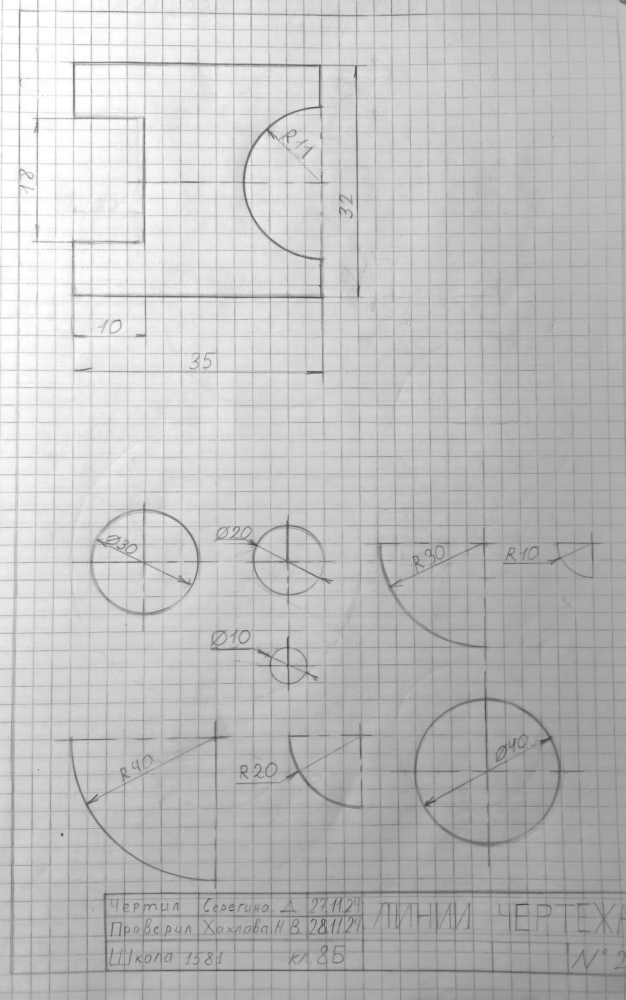
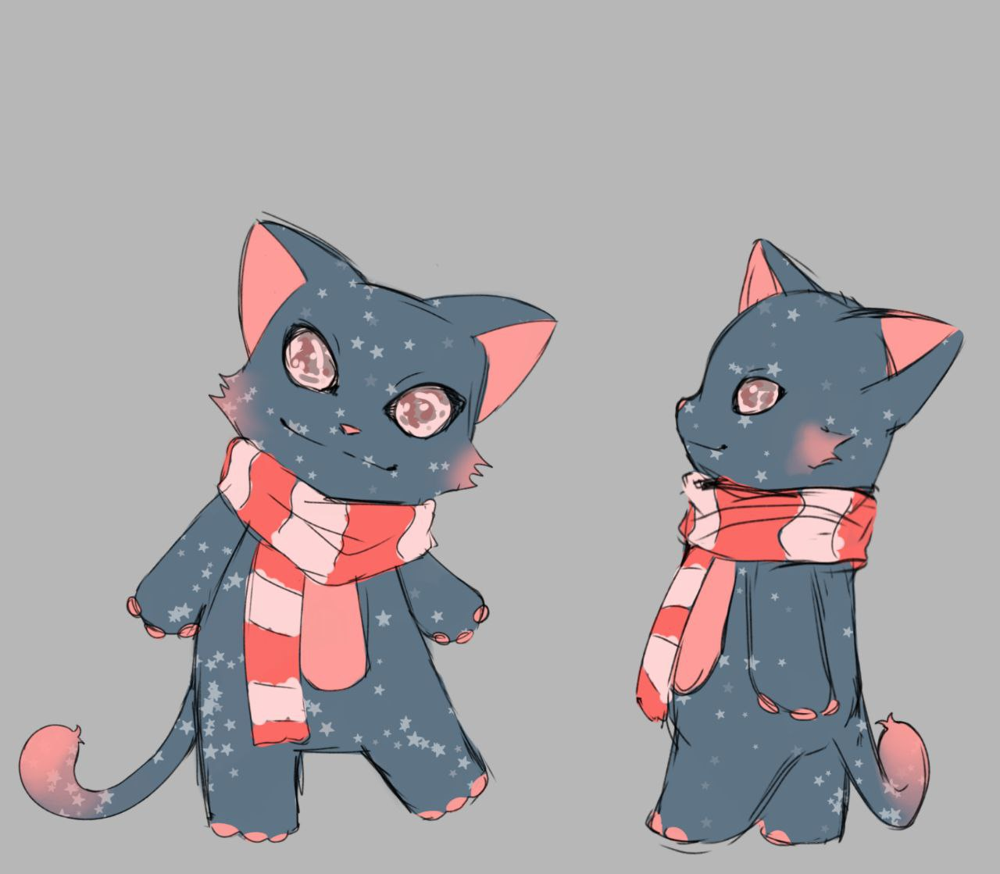
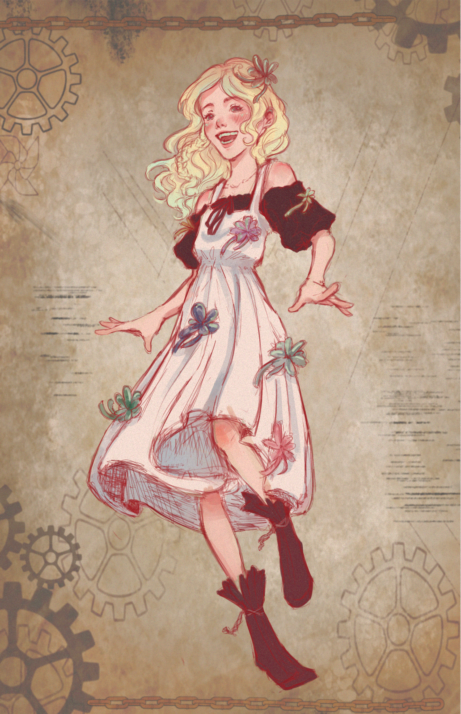
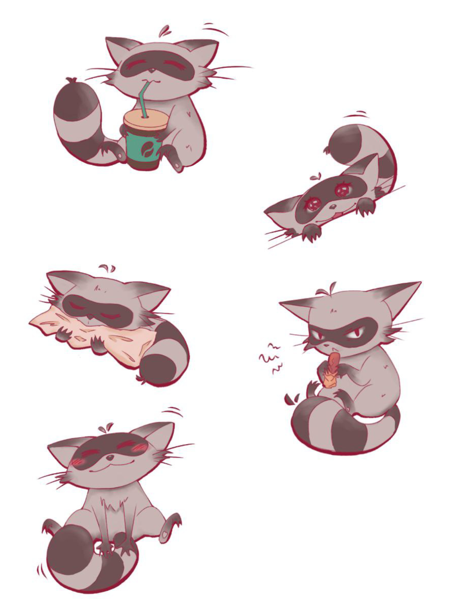

Photo to be addedAcrylic
Layered colour and glowing light.
See more on Google DriveArt portfolio. Drawing, painting and animation.

Photo to be addedLayered colour and glowing light.
See more on Google Drive
Photo to be addedLight, shadow and texture in pencil.
See more on Google Drive
Photo to be addedTransparent washes and soft edges.
See more on Google DriveDrawings brought into motion.
See more on Google Drive
Photo to be addedQuick studies from observation and imagination.
See more on Google Drive
Photo to be addedCharacters and expressions with a touch of humour.
See more on Google Drive
Photo to be addedPrecise views, dimensions and construction lines.
See more on Google Drive
Photo to be addedWorlds, characters and ideas developed visually.
See more on Google Drive
Photo to be addedOriginal characters and a visual language of my own.
See more on Google Drive
Photo to be addedSmall characters with big expressions.
See more on Google DriveI’m Daria, and I make drawings, paintings and animation. I like to understand how things are built as well as how they look, so my work moves between loose watercolour and cartoon, careful studies of light and shadow, and precise technical drawing.
This page shows one piece from each of ten categories. The folders on Google Drive hold more.